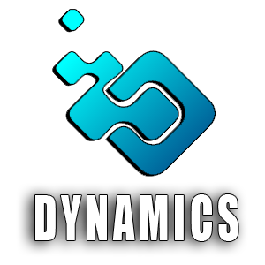
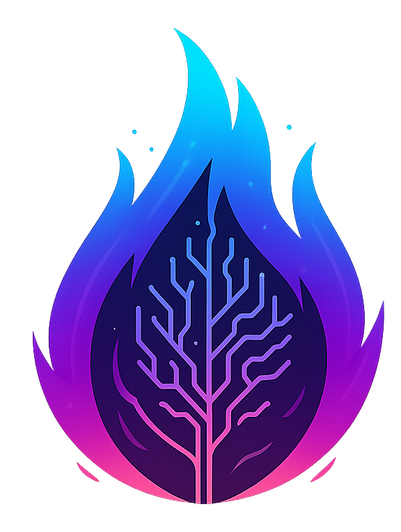

Este portfólio reúne os projetos desenvolvidos ao longo da minha formação em Banco de Dados pela Faculdade de Tecnologia de São José dos Campos - Prof. Jessen Vidal. Ingressei no curso em 2019, trazendo uma trajetória prévia na área de desenvolvimento de software, com passagens por diferentes segmentos da indústria.
O curso de Banco de Dados ampliou minha visão técnica, especialmente nas áreas de modelagem de dados, arquitetura de sistemas e desenvolvimento orientado a dados. Ao longo dos semestres, trabalhei com equipes multidisciplinares em projetos reais, aplicando metodologias ágeis e tecnologias variadas para entregar soluções a parceiros acadêmicos.
Atuo principalmente no desenvolvimento backend, com experiência em Java, Python e ambientes containerizados. Tenho familiaridade com bancos de dados relacionais e não relacionais, desenvolvimento de APIs REST e integração de sistemas.
Java e Spring Boot, no desenvolvimento de APIs REST seguras e escaláveis; Python com Django, na construção de backends orientados a dados; Vue.js e TypeScript, no desenvolvimento de interfaces web modernas e componentizadas; PostgreSQL e MySQL, para modelagem relacional, otimização de consultas e controle de migrações; MongoDB, para armazenamento de dados não relacionais; Docker e Docker Compose, na construção de ambientes containerizados e reproduzíveis; Oracle Spatial e GeoTools, para processamento e armazenamento de dados geoespaciais; Swagger, na documentação de APIs REST; AWS e Azure, para hospedagem e deploy de aplicações em nuvem.
Dynamics • GSW_API • GeoHood • Athos Insight • EnerSight

O primeiro projeto integrador do curso de Banco de Dados propôs o desenvolvimento de uma solução de gerenciamento voltada ao controle de processos internos. O desafio envolvia a criação de um sistema capaz de cadastrar produtos, definir regras de promoções e vincular essas promoções aos produtos dentro da plataforma, uma demanda concreta de automação de processos comerciais.
O produto desenvolvido, o Dynamics, foi um sistema web com funcionalidades de cadastro de produtos, categorias e promoções, além do vínculo entre promoção e produto. A aplicação contou com diagramas de entidade e relacionamento, servidor de banco de dados online e wireframes que orientaram o desenvolvimento das telas.
Repo: Projeto Dynamics
Atuei no desenvolvimento das APIs REST principais, incluindo os endpoints de cadastro de produtos, categorias e promoções. Um dos principais desafios foi implementar a lógica de negócio que vinculava promoções a produtos respeitando regras de vigência e compatibilidade, o que exigiu atenção ao modelo de dados e à validação das entradas. Também fui responsável pela implementação da autenticação e autorização, garantindo que diferentes perfis de acesso fossem tratados corretamente no backend.
Figura 02 - Projeto GSW_API
O desafio proposto foi criar um mecanismo para mapeamento de portais de notícias estratégicas, com captura rotineira de dados para geração de histórico. A ideia era possibilitar, futuramente, a aplicação de análises baseadas em inteligência artificial para cruzamento de dados e identificação de ações estratégicas de negócio. Essa estrutura deveria ser aplicada também para APIs de fornecimento de dados estratégicos, como previsão do tempo.
A solução desenvolvida foi uma API com funcionalidades de cadastro de portais de notícias, cadastro de APIs externas, cadastro de tags, processo de web scraping para captura e armazenamento de dados, e telas de consulta com filtros. O sistema também oferecia indicação automática de tags relacionadas às notícias, facilitando a categorização e a análise posterior do conteúdo capturado.
Repo: Projeto GSW_API
Participei da definição da arquitetura da API e da implementação dos endpoints de cadastro e consulta. O principal desafio técnico foi modelar e implementar o relacionamento muitos-para-muitos entre notícias e tags de forma eficiente para consultas e capaz de suportar a indicação automática de categorias. Também trabalhei na camada de validação de dados, garantindo que as informações capturadas via scraping fossem armazenadas de forma consistente, mesmo diante de variações no formato dos conteúdos externos.
Figura 03 - Projeto GeoHood
O quarto semestre trouxe um desafio voltado ao processamento de dados geoespaciais aplicados à agricultura. O objetivo era criar um sistema para cadastro, análise e visualização de áreas agrícolas, com gestão eficiente por meio de dashboards interativos e mapas. O sistema deveria suportar diferentes perfis de usuário com permissões específicas e possibilitar o cadastro de geometrias via upload de arquivos .geojson.
O GeoHood foi desenvolvido como uma aplicação web que importa dados GeoJSON, processa as geometrias e as armazena em banco de dados Oracle Spatial. O sistema oferece consultas geográficas e visualização em mapas, dashboards interativos com filtros e controle de acesso por perfil de usuário, Administrador, Analista e Consultor, cada um com responsabilidades distintas no ciclo de vida das áreas cadastradas.
Neste projeto, atuei como Product Owner, sendo responsável pela definição e priorização do backlog, levantamento de requisitos junto ao parceiro e acompanhamento da evolução das entregas ao longo das sprints.
Repo: Projeto GeoHood
A equipe deste semestre se manteve unida a partir do projeto anterior, e a chegada de novos membros foi bem recebida pelo grupo. Esse histórico compartilhado acelerou o alinhamento inicial e trouxe confiança para enfrentar os desafios que viriam. Neste projeto atuei em dupla função: como Product Owner, conduzi o levantamento de requisitos com o parceiro, organizei o backlog e priorizei as entregas a cada sprint; e como desenvolvedor backend, assumi as responsabilidades técnicas mais complexas do ciclo.
Um dos requisitos mais desafiadores foi a necessidade de utilizar o Oracle Database na Oracle Cloud para armazenar dados geoespaciais no formato GeoJSON como polígonos espaciais nativos. A tarefa foi iniciada por outro membro do backend, mas diante da complexidade técnica foi necessário redistribuir as responsabilidades. Um colega ficou responsável pela configuração da conexão com a Oracle Cloud e pela autenticação via wallet criptografada, enquanto assumi a frente de entender o padrão GeoJSON, implementar o sistema de importação e tratamento dos dados e integrar a biblioteca Oracle Spatial ao stack Java do backend.
Durante o desenvolvimento, a licença estudantil expirou sem aviso e a instância do banco na nuvem foi encerrada automaticamente, apagando toda a infraestrutura configurada. Para resolver a situação, entrei em contato com o suporte internacional da Oracle durante a madrugada, identifiquei o ocorrido e reconstruí toda a estrutura em uma nova conta estudantil, incluindo a reconfiguração do banco para aceitar dados espaciais e a reintegração da biblioteca ao projeto Java, com a ingestão completa dos dados GeoJSON funcionando. Fomos o único grupo da turma a entregar esse requisito, e ainda auxiliamos outra equipe a configurar o mesmo ambiente com a respectiva wallet criptografada.
Ao longo das sprints seguintes, enfrentamos um desequilíbrio de comprometimento dentro da equipe. Como resposta, reorganizamos as frentes de trabalho: assumi inteiramente o backend e o banco de dados, enquanto Juan ficou responsável pelo frontend e pela integração performática dos dados ao mapa interativo com Leaflet, um desafio técnico significativo por si só. Os demais membros concentraram suas contribuições em atividades administrativas, cadastrais e de design. A divisão foi desgastante, mas nos permitiu manter o ritmo e entregar um produto funcional dentro dos prazos.

O Athos Insight é uma plataforma web que centraliza e organiza dados de projetos, transformando-os em informações estratégicas para a tomada de decisão. A aplicação permite monitorar produtividade e horas lançadas por desenvolvedor e projeto, acompanhar custos previstos em relação aos realizados, visualizar dashboards com indicadores financeiros e operacionais, controlar a evolução de tarefas, bugs e issues, e exportar relatórios em PDF. A solução foi hospedada em uma máquina virtual na Microsoft Azure, com capacidade para até 30 usuários simultâneos no ambiente educacional.
Repo: Projeto Athos Insight
Após o projeto anterior, eu e Juan chegamos ao Athos Insight com maturidade técnica e confiança construídas ao longo de um semestre muito exigente. De forma inesperada, recebemos um convite para integrar um novo grupo que estava se formando na turma. Aceitamos, motivados pela perspectiva de uma distribuição de tarefas mais equilibrada e por acreditar no potencial da equipe. As decisões técnicas e estruturais foram tomadas de forma democrática, o que tornou o processo colaborativo, mesmo quando as escolhas majoritárias foram em direção diferente da que eu defendia.
A situação ficou mais difícil quando membros que participaram de forma decisiva nas votações de stack e arquitetura trancaram o semestre logo no início, deixando o projeto com uma equipe reduzida. O backend e o frontend foram desenvolvidos em Python, uma stack nova para o grupo, o que significou aprender o framework enquanto o produto era construído. Ruth, Caique, Juan e eu assumimos a responsabilidade de sustentar o projeto e manter o ritmo das entregas.
Ao longo das sprints, conflitos de código e integrações mal testadas se tornaram parte da rotina. Funcionalidades que funcionavam voltavam quebradas após novos merges, o que gerava ciclos de correção intensos próximos às entregas. Os finais de sprint concentravam uma carga significativa de resolução de problemas: era recorrente que Ruth, Juan e eu ficássemos até tarde corrigindo código, alinhando lógica de negócio e garantindo que as funcionalidades chegassem estáveis na entrega.
Entregamos o produto. Ao final do semestre, parte do time optou por seguir em outra direção, uma decisão difícil de absorver considerando o esforço coletivo investido por quem permaneceu até o fim. A experiência reforçou o valor do comprometimento real e da capacidade de manter a qualidade técnica mesmo quando as circunstâncias externas ao código se tornam adversas.
Figura 05 - Projeto EnerSight
O EnerSight é uma plataforma web analítica desenvolvida para a TECSYS com o objetivo de centralizar, organizar e processar dados públicos da ANEEL. A plataforma automatiza a coleta de conjuntos de dados regulatórios, armazena-os em banco estruturado e permite a análise de indicadores de continuidade como DEC e FEC entre diferentes distribuidoras, regiões e agrupamentos elétricos. Entre as funcionalidades principais estão a coleta automatizada de dados, análise de indicadores, visualização comparativa, gerenciamento de usuários com controle de acesso e registro de logs para rastreabilidade das operações.
Repo: Projeto EnerSight
O semestre começou com energias renovadas e um novo integrante no grupo. Ruth assumiu o papel de Product Owner e fez um trabalho muito cuidadoso: chegou à reunião de planejamento com um plano estruturado, pensado para facilitar a organização de todos. Em um momento de ceticismo, fiz questionamentos excessivos ao plano sem considerar o quanto ela havia se dedicado. Dias depois, em conversa com outros membros, percebi o erro, procurei ela pessoalmente, me desculpei e agradeci o esforço, um momento importante de autoconhecimento e respeito.
A sprint 1 trouxe problemas estruturais desde cedo: uma tarefa de base do backend que deveria estar pronta antes do início oficial só foi mergeada sete dias após o começo da sprint. Com isso, outros membros que avançaram com suas implementações sem a fundação pronta acumularam PRs com conflitos difíceis de resolver. O processo de revisão ficou excessivamente rígido logo de início, gerando atrasos que se propagaram por todas as entregas posteriores. Neste período, atravessei um momento pessoal muito difícil: a hospitalização e o falecimento da minha avó exigiram viagens frequentes e me afastaram do projeto em um momento crítico para o grupo.
Ao retomar, identifiquei um problema recorrente no backlog: tarefas criadas sem avaliação crítica descreviam a mesma implementação de formas diferentes, distribuídas entre membros distintos. Passei uma madrugada implementando todos os pontos de uma tarefa para descobrir, ao registrar a entrega no Jira, que outro membro tinha uma tarefa diferente com a mesma demanda. Comuniquei diretamente o colega sobre o problema. Nesse contexto, o PO pediu saída e outros membros decidiram formar um grupo próprio.
A decisão foi encarada como uma oportunidade. Convenci Juan e Renato a abandonarmos o código anterior e começarmos do zero: novo grupo, nova empresa, novo produto. Assumi o backend integralmente, Juan ficou com o frontend e a função de PO, e Renato com as documentações e o cargo de SM. Com apenas duas sprints restantes, trabalhamos no ritmo e no clima de uma startup e entregamos o EnerSight com qualidade que, na minha avaliação, representou o melhor produto técnico da turma. Na sprint final, recebemos Lucas e Vinícius, que desenvolveram a frente de séries temporais e previsibilidade com alto nível de dedicação e entrega.